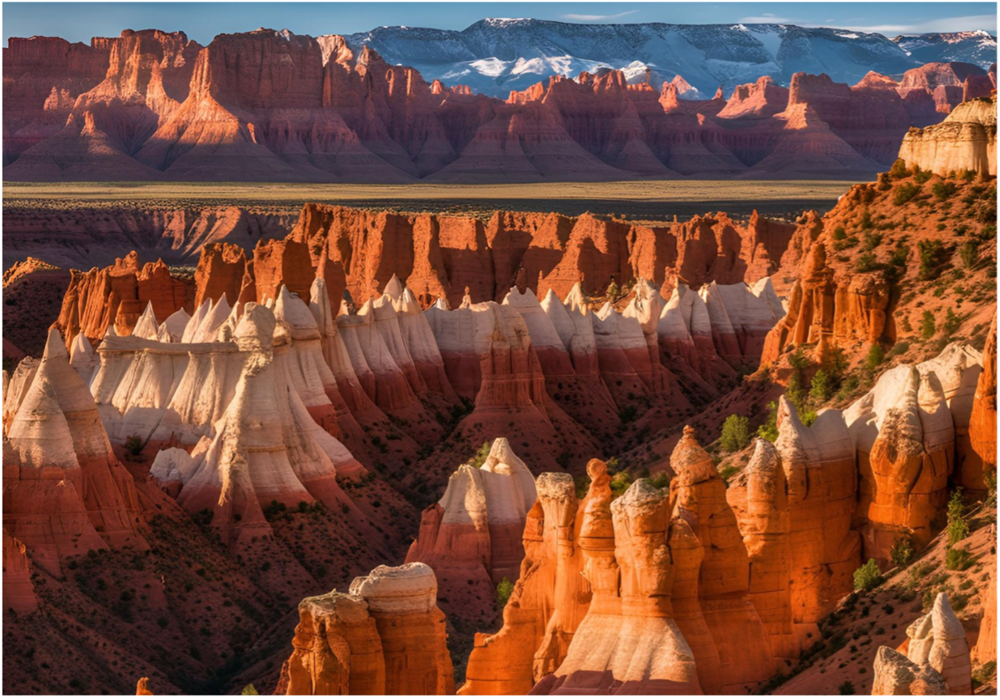

|  | |||||||||||||||||||
Welcome to Utah: The Beehive StateIn the western United States, Utah is known for its stunning landscapes, diverse geography, and rich history. The state boasts five national parks, known collectively as "The Mighty 5," which include Arches, Zion, Bryce Canyon, Canyonlands, and Capitol Reef. These parks offer visitors breathtaking views of red rock formations, deep canyons, and majestic cliffs. In addition to its natural beauty, Utah is a hub for outdoor adventure, offering world-class skiing, hiking, and mountain biking. The state is also home to Salt Lake City, the vibrant capital known for its historical significance as the headquarters of the Church of Jesus Christ of Latter-day Saints and its growing tech industry and thriving arts scene.
Whether you're exploring the iconic Bonneville Salt Flats or enjoying the serene landscapes of the Great Salt Lake, Utah is a destination that captivates with its unique blend of natural wonders and cultural heritage. |
|
||||||||||||||||||